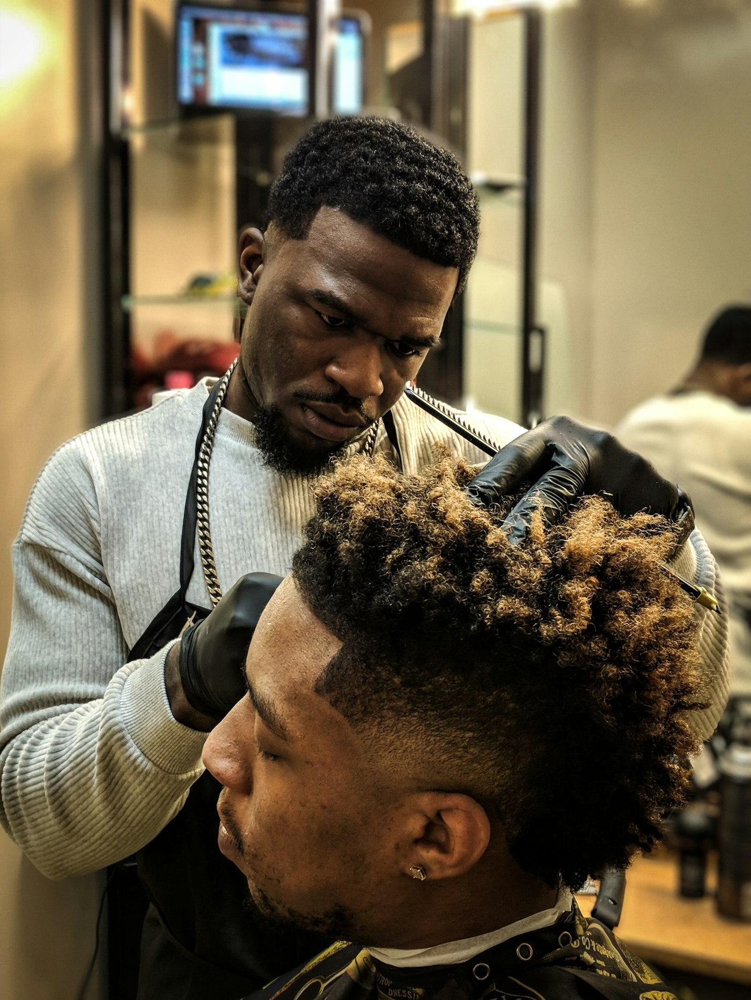

Corte fresco a una cuadra del río.
Barbería de barrio en Las Peñas. Tres sillas, cuatro barberos y café mientras esperas. Reserva tu turno o pasa sin cita si hay hueco.
Turnos libres hoy · toca uno y te lo apartamos por WhatsApp

Sin cita
de 14:00 a 16:00
- Corte
- $10
- Barba
- $7
- Corte y barba
- $15
Lun a sáb · 9:00 a 20:00Calle Numa Pompilio Llona, Las Peñas